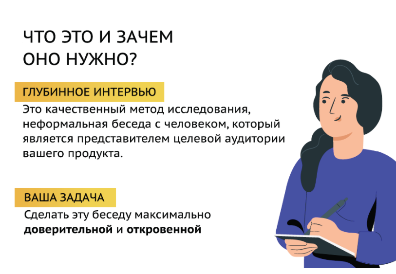
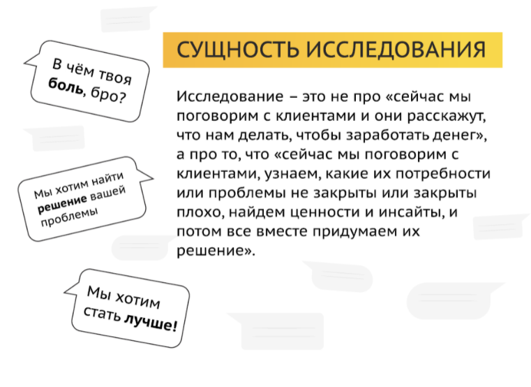
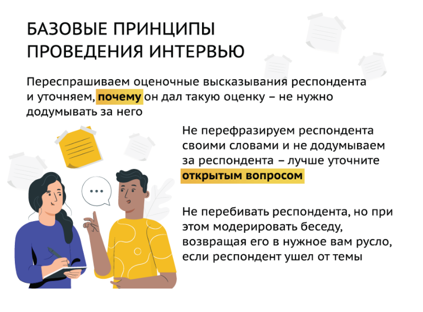
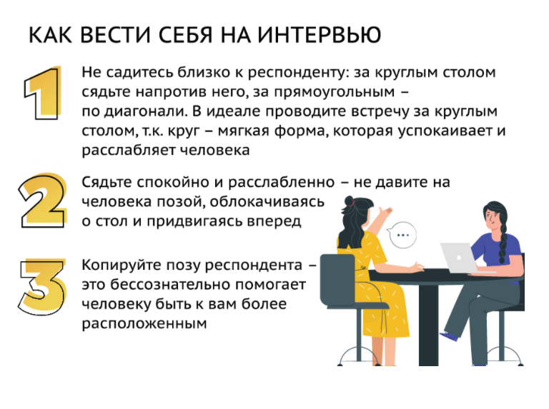
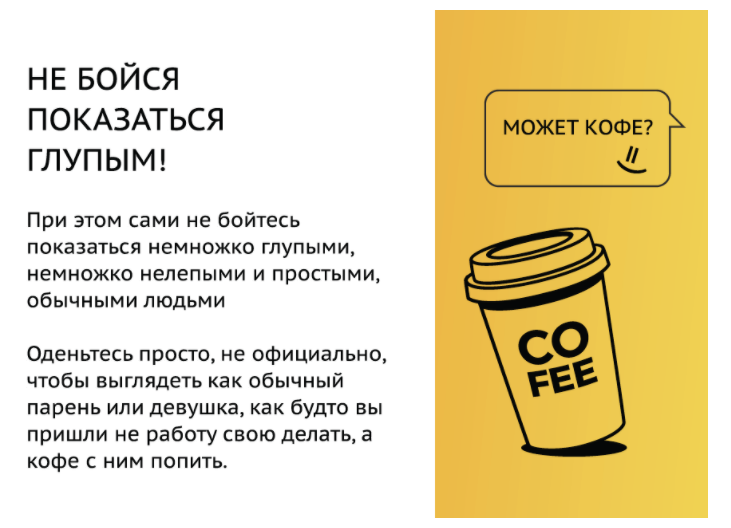

онлайн-конференция для тех, кто делает
удобные цифровые продукты

Войти
Как провести интервью и докопаться до сути
 Глубинное интервью – отличный инструмент, если вам нужно понять проблемы и потребности вашего потенциального клиента, которые сам он
зачастую даже не осознаёт. Надежда Щетинина, руководитель Центра компетенции исследований клиентского опыта банка ПСБ, в своём
докладе
для онлайн-конференции UX-марафон
рассказала, для чего используется глубинное интервью, какие принципы и психологические приёмы помогут
провести его максимально успешно и как строить общение с различными категориями «трудных» респондентов.
Глубинное интервью – отличный инструмент, если вам нужно понять проблемы и потребности вашего потенциального клиента, которые сам он
зачастую даже не осознаёт. Надежда Щетинина, руководитель Центра компетенции исследований клиентского опыта банка ПСБ, в своём
докладе
для онлайн-конференции UX-марафон
рассказала, для чего используется глубинное интервью, какие принципы и психологические приёмы помогут
провести его максимально успешно и как строить общение с различными категориями «трудных» респондентов.

Для чего нужно глубинное интервью?
Итак, глубинное интервью – это неформальная беседа с представителем целевой аудитории вашего продукта. Оно применяется, когда вам нужно выявить наиболее глубинные (отсюда и название) проблемы и потребности человека, в которых он зачастую не отдаёт отчёта даже сам себе.Почему это так важно? Потому что на поверхности, на уровне сознания может лежать что-то одно, и именно этот факт респондент назовёт в ответ на ваш прямой вопрос. Однако в действительности руководить поведением человека могут при этом совсем другие причины – вот до них-то вам и предстоит «докопаться» в ходе интервью.
“Именно понимание причин поможет вам создать гораздо более востребованный продукт и найти тот инсайт, который поможет этот продукт продать”
Глубинное интервью применяется, когда вы планируете создать новый продукт либо когда вам необходимо разработать стратегию развития текущего продукта. Ещё одна сфера применения метода – исследование mindset целевой аудитории: как человек взаимодействует с вашим продуктом, как он его выбирает, какие у него ожидания от вашего сервиса и работы с вашей компанией в целом.
Кроме того, глубинное интервью нередко используется, чтобы проверить идею продукта, то есть, понять, есть ли у людей та проблема или потребность, которую заложили в основу этой идеи.

Базовые принципы проведения глубинного интервью
Принцип 1. Задаём только открытые вопросы – «Расскажите о…», «Как…», «Почему…?»Хороший вопрос – «Как вы оплачиваете коммунальные платежи?»
Плохой вопрос – «Вы оплачиваете платежи за ЖКУ через мобильное приложение?»
Принцип 2.Не предлагаем варианты ответов.
Человек так устроен, что ему всегда проще выбрать один из готовых вариантов, чем задуматься и понять причины своего выбора в той или иной ситуации.
“Когда респондент проговаривает что-то вслух, он это ещё раз анализирует и может сам прийти к каким-то выводам, полезным для вашего исследования”
Принцип 3. Не задаём вопросы про будущее, не просим представить ту или иную ситуацию и дать ей свою оценку. Также не просим респондента предлагать идеи – спрашиваем только о прошлом и настоящем опыте.
Всё просто – сегодня, когда вы задаёте вопрос, человек находится в одной жизненной ситуации, но к тому моменту, когда будет создан продукт, эта ситуация может поменяться. И продукт в том виде, в каком вы его придумали вместе с респондентом, может оказаться уже нерелевантным.
Принцип 4. Переспрашиваем оценочные высказывания респондента. Вам ни в коем случае не нужно додумывать за него.
Оценочные высказывания – это «мне так удобно», «мне так понятно», «мне так комфортно». И это «удобно» у каждого своё, поэтому важно понять, что является удобным или понятным именно для вашего респондента.

Принцип 5.
Не перефразируем высказывания респондента и не додумываем за него. Если вы не уверены, что правильно поняли, что имелось в виду – лучше уточните, задав всё тот же открытый вопрос.
Принцип 6. Старайтесь не перебивайте респондента, однако, не забывайте модерировать беседу, чтобы человек не ушёл от темы и не потратил зря своё и ваше время.
Дать респонденту уклониться от темы можно в двух случаях, считает Надежда Щетинина. Первая ситуация – это когда человеку нужно выговориться о проблемах, прямо или косвенно связанных с вашей компанией или вашими конкурентами. Если вы выслушаете человека и хотя бы взглядом покажете, что вы его услышали и вам не всё равно – это автоматически создаст доверие между вами, а доверие – залог успешного проведения интервью.
“Люди любят говорить о себе. У каждого человека есть потребность, чтобы его любили, понимали и слышали. Если вам начинают изливать боль – вы закроете в этот момент потребность респондента быть услышанным и значимым”
Второй случай – когда респондент начинает вспоминать ситуации, порождающие у него те же эмоции либо ту же модель поведения, что и ситуация пользования вашим продуктом. В каждом из нас заложены определённые бессознательные триггеры, которые запускают нашу реакцию на ту или иную ситуацию. И на один и тот же триггер в разных ситуациях наша реакция будет одинакова – и причины её будут одинаковы, напоминает специалист.
Как вести себя на интервью
Задача исследователя, проводящего глубинное интервью – сделать беседу максимально доверительной и комфортной для респондента. Для этого достаточно соблюдать несколько несложных правил.- Не садитесь слишком близко, тем более рядом – тем самым вы нарушите личные границы человека, вызовете ощущение дискомфорта. За столом садитесь немного по диагонали от респондента, чтобы беседа не походила на перекрёстный допрос.
- Старайтесь сидеть достаточно спокойно и расслабленно, не нависая над респондентом и не придвигаясь к нему.
- Хороший приём – копировать позу респондента. Наш мозг бессознательно считывает сходство; всё, что похоже на нас, воспринимается как «своё». Исключение составляют закрытые позы, их «отражать» противопоказано.
- Очень важно смотреть в глаза человеку. Если беседа проходит в Zoom – смотрите строго в камеру, а не на экран. Ваш взгляд должен быть при этом спокойным, не напряжённым, но внимательным – респондент должен чувствовать, что вы его слушаете, и всё ваше внимание в данный момент посвящено ему.

Как говорить во время интервью
- Старайтесь говорить медленно, негромко, спокойно, доброжелательно, не издавайте громких и резких звуков – это расслабляет человека и настраивает его на нужную вам волну.
- Говорите с человеком на простом и понятном ему языке без профессиональных терминов. Вопрос «На что вы тратите деньги?» будет гораздо понятнее респонденту, чем «Какие транзакции вы совершаете на ежедневной основе?»
- Разговаривайте с респондентом его словами – в буквальном смысле, повторяйте те слова и выражения, которые он использует в своей речи, даже если обычно вы говорите совсем иначе.
- Делайте паузы, это даст вам время сформулировать следующий вопрос, а для респондента будет стимулом рассказать или вспомнить что-то ещё.
- Ни в коем случае не давайте оценку тому, что вам сказал респондент, особенно негативную.
“Важно слышать и чувствовать респондента; не давите и не выпытывайте ответ, если ему неприятен ваш вопрос или ему тяжело об этом говорить”
“На интервью респондент всегда прав! Его эмоция – это всегда правильная эмоция!”
Если вы хотя бы раз дадите свою оценку словам респондента – скорее всего, он решит, что вы оцениваете каждое его слово, и просто закроется от вас.
При этом сами не бойтесь ошибиться или показаться недостаточно умным, подчёркивает Надежда Щетинина, – тем самым вы покажете, что вы обычный человек, такой же, как и ваш респондент. Что вы так же можете чего-то не знать или совершать ошибки, и в этом нет ничего страшного.
